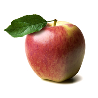
Ambrosia
- Developed by: Seedling found in British Columbia
- Grown in: Across Canada. Also in Washington state, Chile, Europe, New Zealand
- Who can grow it: Growers licensed by Summerland Varieties Corp.
- Tasting notes: Sweet, crisp, light
- Production: More than a million trees
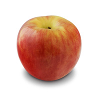
Autumn Glory
- Developed by: Bred in Washington state
- Grown in: Washington state
- Who can grow it: Domex Superfresh Growers
- Tasting notes: Crunchy, sweet, cinnamon
- Production: 56,000 trees

Cosmic Crisp
- Developed by: Washington State University
- Grown in: Washington state (not for sale until 2017)
- Who can grow it: Growers in Washington state
- Tasting notes: Crisp, juicy, sweet-tart
- Production: None so far. First commercial trees are due to be planted in 2017 (300,000 trees)
- Footnotes: Cosmic Crisp is a brand, not an apple variety. The apples are from a variety called WA 38.
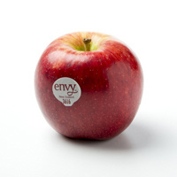
Envy
- Developed by: ENZA, New Zealand
- Grown in: Washington, New Zealand, Chile
- Who can grow it: Growers affiliated with ENZA
- Tasting notes: Smooth, sweet, aromatic
- Production: 797,000 trees; 1.2 million trees on order
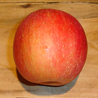
EverCrisp
- Developed by: Midwestern Apple Improvement Association
- Grown in: Growers in a dozen states, mostly in the East
- Who can grow it: Any member of Midwestern Apple Improvement Association
- Tasting notes: Sweet, crisp
- Production: 30,000 trees planted. 600,000 ordered.
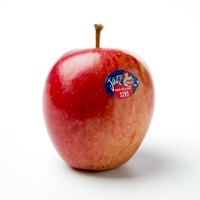
Jazz
- Developed by: ENZA, New Zealand
- Grown in: Chile, New Zealand, Washington state in the U.S.
- Who can grow it: Growers affiliated with ENZA
- Tasting notes: Snappy, tangy, sweet
- Production: 1.8 million trees

Kanzi
- Developed by: Belgium
- Grown in: Michigan and Washington state
- Who can grow it: Growers affiliated with Columbia Marketing International
- Tasting notes: Sweet, tart, crunchy
- Production: Undisclosed. Relatively small production so far in the U.S.
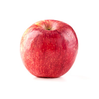
KIKU
- Developed by: Brand created by Italian company
- Grown in: Europe, New Zealand, Michigan, Pennsylvania, Washington state
- Who can grow it: In U.S., growers affiliated with Columbia Marketing International
- Tasting notes: Super sweet, crunchy, juicy
- Production: Undisclosed. Relatively small production so far in the U.S.
- Footnotes: KIKU is a brand, not an apple variety. The apples are from an open variety called Fuji Brak.
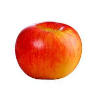
Lady Alice
- Developed by: Seedling found in Washington state
- Grown in: Washington state
- Who can grow it: A few growers affiliated with Rainier Fruit Co.
- Tasting notes: Sweet-tart, crisp
- Production: 300 acres, or roughly 300,000 trees
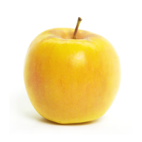
Opal
- Developed by: Czech Republic
- Grown in: Many countries
- Who can grow it: In the U.S., only Broetje Orchards in Washington state
- Tasting notes: Sweet, tangy, crunchy
- Production: A million trees in the U.S.
- Footnotes: This apple is said to resist browning.
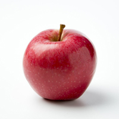
Pacific Rose
- Developed by: ENZA, New Zealand
- Grown in: Mostly Washington state, although also grown in small numbers in New Zealand
- Who can grow it: Growers affiliated with ENZA
- Tasting notes: Crisp, clean, sweet
- Production: 722,000 trees
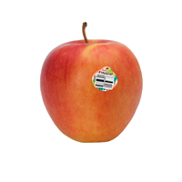
Pinata
- Developed by: Germany
- Grown in: Europe, Washington, Minnesota
- Who can grow it: Stemilt Growers in Washington state and Dennis Courtier in Minnesota
- Tasting notes: Tropical, crisp, sweet and tart
- Production: 375 acres in production, or at least 375,000 trees
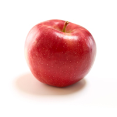
RubyFrost
- Developed by: Cornell University
- Grown in: New York state (not yet for sale)
- Who can grow it: Apple growers in New York
- Tasting notes: Crisp, sweet-tart
- Production: About 200,000 planted, another 200,000 ordered
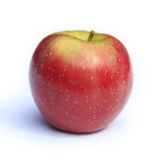
SnapDragon
- Developed by: Cornell University
- Grown in: New York state
- Who can grow it: Apple growers in New York
- Tasting notes: Crunchy, sweet
- Production: About 300,000 planted, another 250,000 ordered
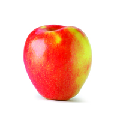
Sonya
- Developed by: New Zealand
- Grown in: Washington state
- Who can grow it: Three growers in Washington's Yakima Valley
- Tasting notes: Sweet and crunchy
- Production: 150,000 trees
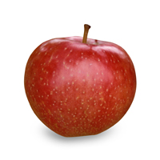
SweeTango
- Developed by: University of Minnesota
- Grown in: Washington, New York, Michigan
- Who can grow it: Members of Next Big Thing fruit-growing cooperative
- Tasting notes: Crisp, sweet, touch of citrus
- Production: 800,000 trees